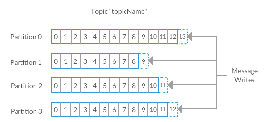
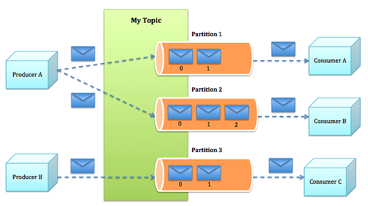

The Essentials of
Apache Kafka™
Apache Kafka™ 2.3.0
@jaceklaskowski / StackOverflow / GitHub / LinkedIn
The "Internals" Books: Apache Kafka • Kafka Streams
Records
- Record (aka message or event) is the unit of data in Kafka
- Array of bytes (in no particular format)
- Apache Avro as data serialization framework
- Record has a key and a value
- Both could be null
- Records are categorized into topics
Topics
- Records are categorized into topics
- Think a table or a directory
- Producers publish messages to topics while consumers consume them
- Topics are partitioned
- Namespaces of one or many partitions
- kafka-topics shell script manages Kafka topics
Partitions
- Topics are partitioned into one or more partitions
- Partitions hold zero, one or many records
- Ordered (by offsets) immutable sequence of records
- A partition is a single ordered log
- Stored durably on disk
- Records are added to partitions in append-only fashion
- Partitions are replicated among brokers as replicas
- In-sync replicas (ISRs)
Replicas and In-Sync Replicas
- Replica is a copy of a partition
- Replication factor is the number of replicas of a topic
- There can be one or many replicas
- Allows for automatic failover when a broker fails
- One replica is the leader while others are followers
- Leader handles writes from producers, and the followers merely copy the leader's log
- In-Sync Replica is a replica that has enough records to be considered in partition leader election
- Use kafka-topics --describe to list the details of a topic (incl. replicas and in-sync replicas)
Offsets
- Offset is a unique sequential numerical position of a record (in a partition of a topic)
- A message in a partition has a unique offset
- Offsets start from 0
- Offsets are unique per partition only
- Not across partitions
Kafka Topics and Partitions
(distributed commit log)

From Official Documentation of Apache Kafka
Kafka Topics and Partitions (cntd)
From Kafka: The Definitive Guide
Brokers
- Kafka Broker is a Kafka server that manages records
- Receives messages, assigns offsets, and commits messages to storage on disk
- Kafka Cluster consists of one or more brokers
- Uses Zookeeper as the source of truth
Producers
- Kafka clients that publish records to a Kafka cluster
- Send messages to topics
- Can optionally specify partitions
- KafkaProducer API for Java
Consumers
- Kafka clients that consumes records from a Kafka cluster
- Subscribe to receive messages from topics
- Read messages in the order they were produced
- Per partition only
- KafkaConsumer API for Java
Kafka Producers and Consumers
 From Apache Kafka: Next Generation Distributed Messaging SystemKafka Producers and Consumers (cntd)
 From Official Documentation of Apache Kafka
From Official Documentation of Apache Kafka
Retention
- Retention of messages in topics is how long messages are stored in topics
- Durable message retention
- For some period of time, e.g. 7 days
- Until a topic reaches a certain size in bytes, e.g. 1 gigabyte
- Once these limits are reached, messages are expired and deleted
- Can be selected on a per-topic basis
Features of Kafka
- Thousands of Producers
- Thousand of Consumers
- Client Independence
- High Throughput
- Message Persistence
- Disk-based Retention
- Scalability
- High Performance